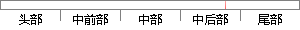

下面介绍一些MFC常用的标准控件。
片段位置图

相似结果|
相似片段 1：的界面，除了微软自带的一些常用控件外，还有用WindowsAPI画图实现的。下面分两部分介绍。1微软自带的控件。微软提供的控件特点是可靠且使用简单，但有一个缺点就是过于死板，不能够改变颜色和增加其它功能
|
※ 片段修改建议 ※
近似词参考：- 介绍：先容
- 常用：经常使用
- 标准：尺度
系统自动生成语句：下面先容一些MFC经常使用的尺度控件。
注：本片段修改建议为系统自动生成，仅供参考。